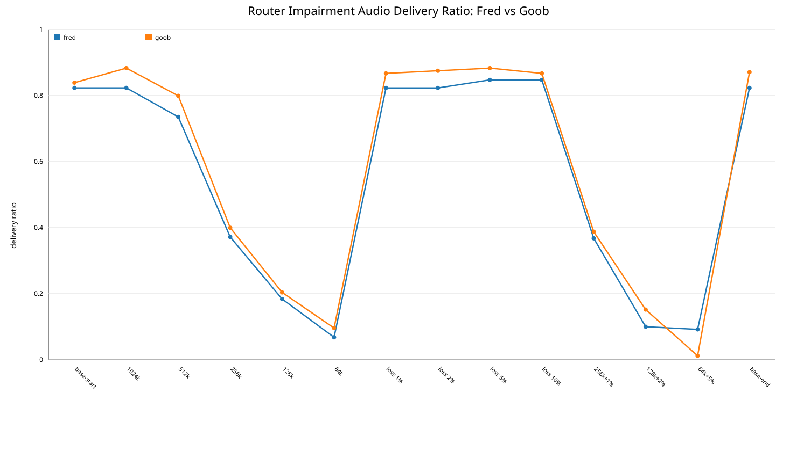
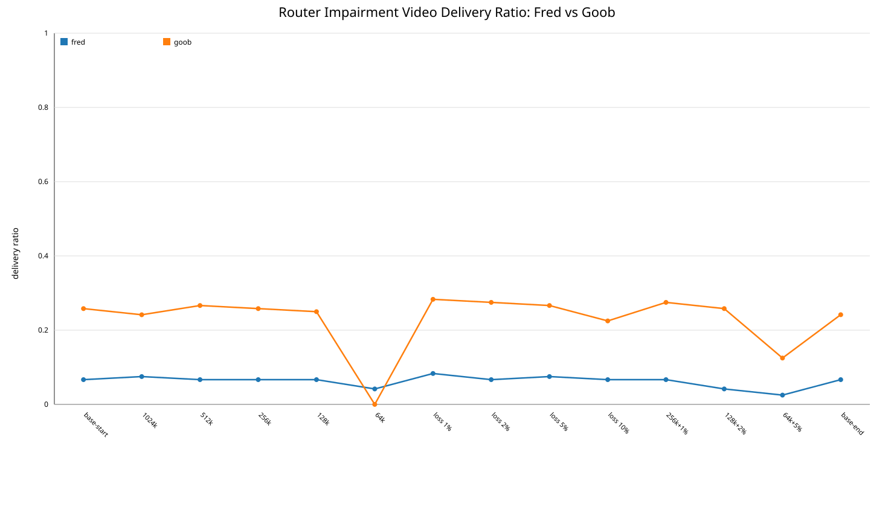
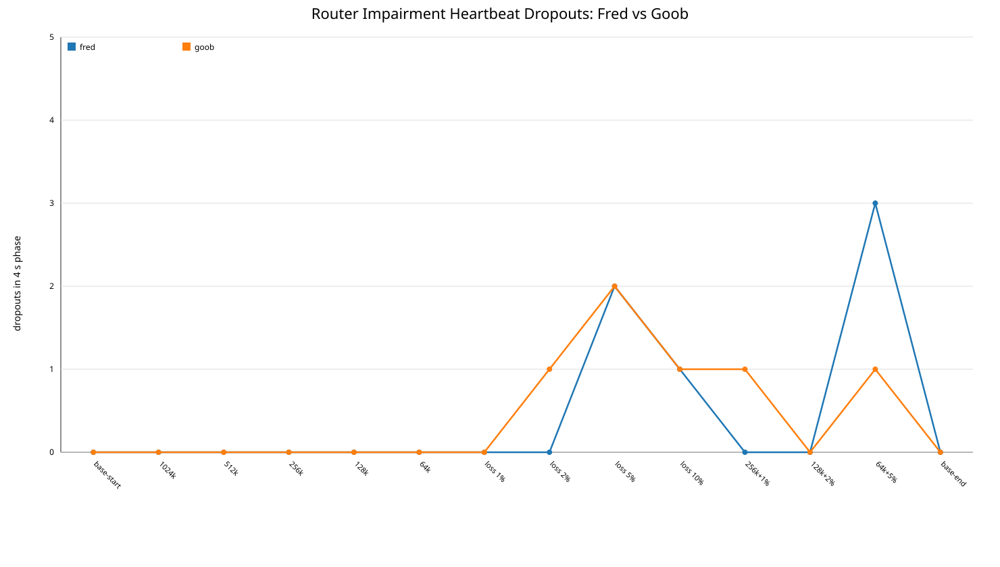
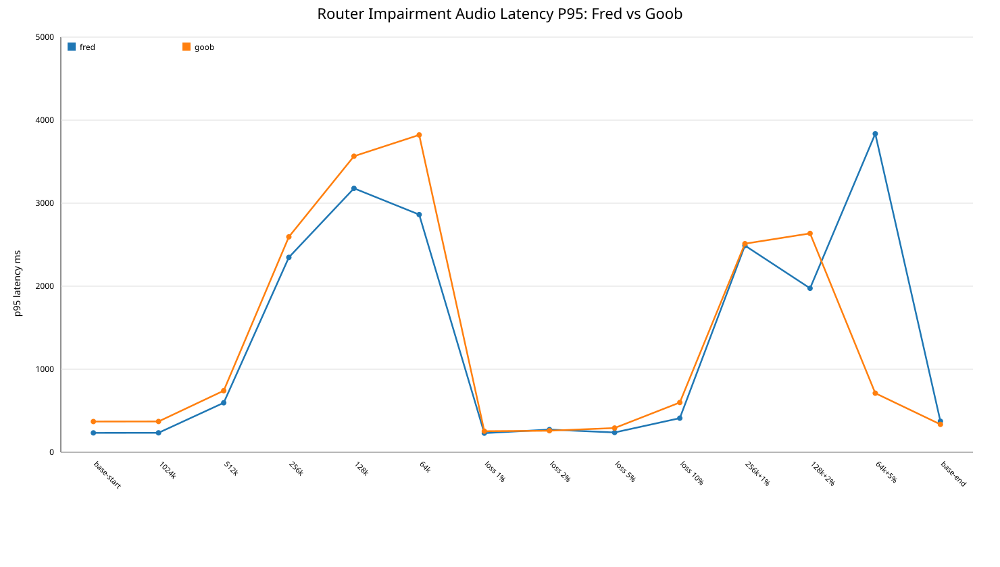

This dashboard preserves historical router-impairment comparison graphs from the original project.
Fred reflects the two-robot full matrix. Goob reflects the rerun that superseded the first full-matrix Goob data.
Condition labels are shortened on the x-axis: base-start/base-end, 1024k, loss 5%, 256k+1%, and similar. The underlying reports and graph-generation tooling are intentionally omitted from this repository.



